Pose panel
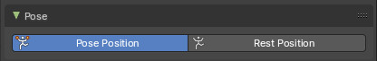
This panel allows you to turn the display for bone and armature layers on and off.
Position
Switch between Pose Position and Rest Position.
Pose position shows the armature in the currently posed state.
Rest Position shows the armature in the rest position. In Rest Pose mode there is no posing possible.
Bone Collections panel
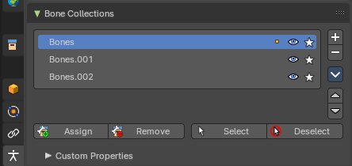
This panel allows the creation, deletion and editing of Bone Collections.
Bone Collection can be used for bone selections.
Bone Collections is a Pose Mode and Edit Mode feature. The controls will be disabled in Object mode.
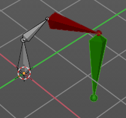
Note: Using collection selections, you can then assign a color to the bone group in the Properties Editor > Bone Properties Tab. For example, you can color the left parts of the rig as blue and right parts as red – and you can also assign a color per edit and pose mode.
List View
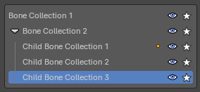
The List view with the bone collections. Double clicking at the name makes it editable.
In the list view, you can drag and drop collection order, drag and drop to create child Bone Collections and show/hide collections by using the eye column. You can also Solo a collection by pressing on the star column.
Note: To add a child Bone Collection, which creates a collapsible hierarchy of bone collections, you will need to drag a Bone Collection into a parent Bone Collection. This allows to toggle parent visibility to inherently toggle children visibility.
Right click menu at a list item
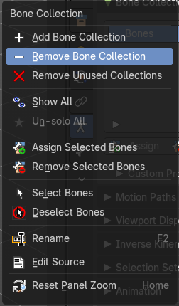
When you right click at one of the menu items then you will reveal a context menu. Most of these menu items exists in the regular menu. So we will not explain it here. But explain it in the regular menu entries below.
| Entry | What it does |
|---|---|
| Reset Panel Zoom | Resets the panel zoom factor. You can zoom in and out with holding ctrl and moving the left mouse. |
| Add / Remove | Add or remove a bone collection. To create a child collection, click and drag an existing collection onto a parent collection. |
Bone collection specials
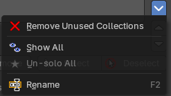
This group of operators show additional options. You can alternatively use the context menu.
Move Bone Group Up / Down
Move the selected bone group up or down in the list.
Remove Unused Collections
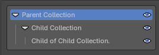
Removes all empty collections that have no bones assigned to them.
Show All
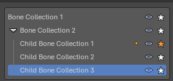
Show all collections.
| Entry | What it does |
|---|---|
| Un-Solo All | Toggles and clears all Solo stars to show all collections again. |
| Rename | Rename the current collection. Note that you can also rename it by simply double clicking at it in the list. |
Assign
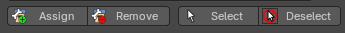
Not in object mode. Assigns the selected bones to the active bone collection.
Note: A bone can belong to multiple collections.
| Entry | What it does |
|---|---|
| Remove | Not in object mode. Removes the selected bones from the active bone collection. |
| Select | Not in object mode. Selects the bones in the active bone collection. |
| Deselect | Not in object mode. Deselects the bones in the active bone collection. |
Motion Paths panel
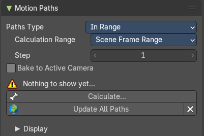
Motion paths allows you to visualize motion paths of animated bones.
Workflow
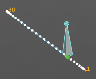
Select the bones that you want to calculate a path for. Note that they should have an animation. No animation, no motion path.
Click at the Calculate button.
When you change the animation then you might need to update the paths.
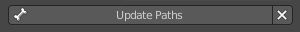
To remove the paths, click at the X button at the Update paths button.
Note: Remember that only selected bones and their paths are affected by these actions!
The paths are shown in a light shade of gray for unselected points, and a slightly blueish gray for selected ones. Around the current frame a glow indicate the direction of movement: blue towards future frames and green towards the past. Each frame is displayed by a small white dot on the paths.
The paths are automatically updated when you edit your poses/keyframes, and they are also active during animation playback. Playing the animation affects the paths only when the Around Current Frame option is enabled.
Paths Type
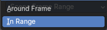
| Entry | What it does |
|---|---|
| Around Frame | Display paths of points within a fixed number of frames around the current frame. When you enable this button, you get paths for a given number of frames before and after the current one (again, as with ghosts). |
| In Range | Display paths of points within specified range. |
Calculation range
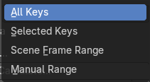
Type of range to calculate for motion paths.
All Keys / Selected Keys / Scene Frame Range
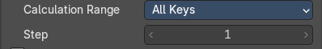
Step
The number of frames between paths shown.
Manual range
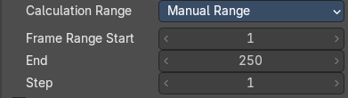
| Entry | What it does |
|---|---|
| Frame Range Start | The start frame for the paths calculation. (not for Around Current Frame Onion-skinning method). |
| End | The end frame for the paths calculation. (not for Around Current Frame Onion-skinning method). |
| Step | Display one point for every n frames on the path. |
Bake to Active Camera
Bake the motion points into the camera space of the active camera. Switching cameras will look wrong then.
Calculate ...
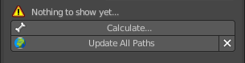
Calculate Paths will create a new motion path in cache. It will open a popup where you can adjust the settings.
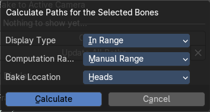
Display Type
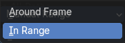
| Entry | What it does |
|---|---|
| Around Frame | Display paths fo poses within a fixed number of frames around the current frame. |
| In Range | Display paths of points within specified range. |
Computation Range
Type of range to calculate.
Bake Location
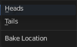
Where to display the path. At the heads of the bones or at the tail of the bones.
Update Paths
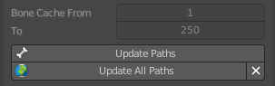
If a path has already been calculated, Update Paths will update the path shape to the current animation. To change the frame range of the calculated path, you need to delete the path and calculate it again.
| Entry | What it does |
|---|---|
| Update All Paths | Update all paths will update not just the path for the selected object, but also for all other paths in the object hierarchy. |
| Clear Paths | Removes all paths in the hierarchy. Bone Calculate From and To is internal, and cannot be edited. Just ignore. |
Display subpanel
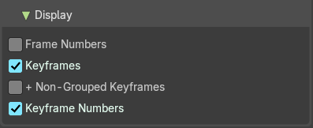
Frame Numbers
Show a small number of the corresponding frame next to each frame dot on the path.
Keyframes
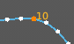
Show the keyframes at the path, with frame number.
| Entry | What it does |
|---|---|
| + Non-Grouped Keyframes | For bone motion paths, it searches the whole Action for keyframes instead of in groups with matching name only (this is slower). |
| Keyframe Numbers | When enabled, you will see the numbers of the displayed keyframes, so this option is obviously only valid when Show Keys is enabled. |
Viewport Display panel
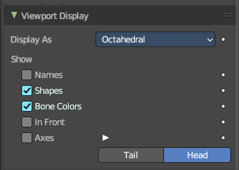
Display options for the armature.
Display As
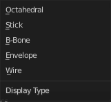
How the bones are displayed in the 3D Viewport.
Octahedral
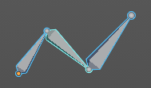
Bones are displayed as a octahedral. With a thick and a thin end.
Stick
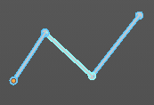
Bones are displayed as a stick.
B-Bone
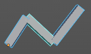
Bones are displayed as a cuboid. This bone display type also allows to display bendy bones subdivisions.
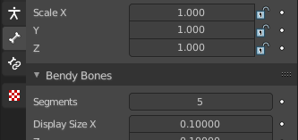
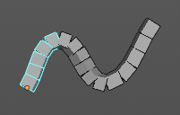
Envelope
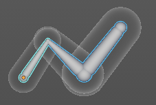
Bones are displayed with its envelopes. The bone deformation influence areas.
Wire
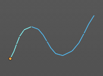
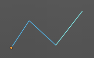
Bones are displayed as thin wire lines. This bone display type also allows to display bendy bones subdivisions.
| Entry | What it does |
|---|---|
| Names | Displays the name of each bone. |
| Shapes | When enabled, the default standard bone shape is replaced, in Object Mode and Pose Mode, by the shape of a chosen object (see Shaped Bones for details). |
| Bone Colors | Display Bone Collection colors to color the bone, if a color set is assigned in the Bone Tab > Viewport Display panel. |
In Front
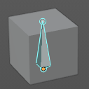
Display the armature always in front of mesh objects, even when they are inside.
Axes
When enabled, the (local) axes of each bone are displayed (only relevant for Edit Mode and Pose Mode).
Position
You can give the axes widget an offset. Higher values moves the axes more to the tip. Lower values moves the axes more to the root.
Relations
Display the start point of the relation lines.
| Entry | What it does |
|---|---|
| Head | The start position of the relation lines from parent to child bones. |
| Tail | The end position of the relation lines from parent to child bones. |
Inverse Kinematics panel
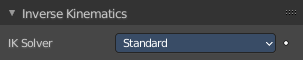
Inverse Kinematics settings.
IK Solver
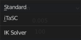
The available IK solver solution. Standard and iTaSC.
Standard
The standard IK solver. It has no further settings.
iTaSC
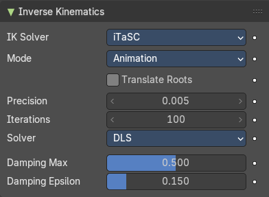
iTaSC stands for instantaneous Task Specification using Constraints. It is a generic multi-constraint IK solver. It has more settings and works a bit different than the standard IK solver.
Mode
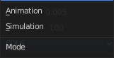
The itasc mode. Animation or Simulation.
Animation
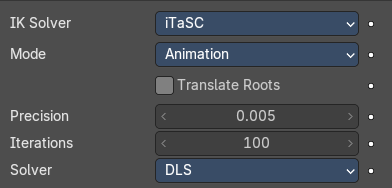
In Animation mode, iTaSC operates like an IK solver: it is stateless and uses the pose from F-curves interpolation as the start pose before the IK convergence. The target velocity is ignored and the solver converges until the given precision is obtained. Still the new solver is usually faster than the old one and provides features that are inherent to iTaSC: multiple targets per bone and multiple types of constraints.
| Entry | What it does |
|---|---|
| Translate Roots | Translate root bones to the armature origin. |
| Precision | The maximum variation of the end effector between two successive iterations at which a pose is obtained that is stable enough and the solver should stop the iterations. Lower values means higher precision on the end effector position. |
| Iterations | The upper bound for the number of iterations. |
Solver
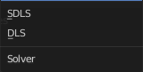
Select the inverse Jacobian solver that iTaSC will use.
SDLS
Computes the damping automatically by estimating the level of ‘cancellation’ in the armature kinematics. This method works well with the Copy Pose constraint but has the drawback of damping more than necessary around the singular pose, which means slower movements. Note that this is only noticeable in Simulation mode.
The SDLS solver does not work together with a Distance constraint. You must use the DLS solver if you are going to have a singular pose in your animation with the Distance constraint.
DLS
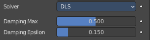
Computes the damping manually. Damping and Epsilon must be tuned for each armature. You should use the smallest values that preserve stability.
| Entry | What it does |
|---|---|
| Damping Max | Maximum amount of damping. Smaller values means less damping, hence more velocity and better precision but also more risk of oscillation at singular pose. 0 means no damping at all. |
| Damping Epsilon | Range of the damping zone around singular pose. Smaller values means a smaller zone of control and greater risk of passing over the singular pose, which means oscillation. |
Simulation
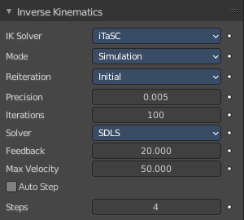
The Simulation mode estimates the target’s velocity, operates in a ‘true time’ context, ignores rotation from keyframes (except via a joint rotation constraint) and builds up a state cache automatically.
Translate Roots
Translate root bones to the armature origin.
ReiterationNever
The solver starts from the rest pose and does not reiterate (converges) even for the first frame. This means that it will take a few frames to get to the target at the start of the animation.
Never will grey out most of the options.
Initial
The solver starts from the rest pose and re-iterates until the given precision is achieved, but only on the first frame (i.e. a frame which doesn’t have any previous frame in the cache). This option basically allows you to choose a different start pose than the rest pose and it is the default value. For the subsequent frames, the solver will track the target by integrating the joint velocity computed by the Jacobian solver over the time interval that the frame represents. The precision of the tracking depends on the feedback coefficient, number of substeps and velocity of the target.
Always
The solver re-iterates on each frame until the given precision is achieved. This option omits most of the iTaSC dynamic behavior: the maximum joint velocity and the continuity between frames is not guaranteed anymore in compensation of better precision on the end effector positions. It is an intermediate mode between Animation and real-time Simulation.
| Entry | What it does |
|---|---|
| Precision | The maximum variation of the end effector between two successive iterations at which a pose is obtained that is stable enough and the solver should stop the iterations. Lower values means higher precision on the end effector position. |
| Iterations | The upper bound for the number of iterations. |
Solver
Select the inverse Jacobian solver that iTaSC will use.
SDLS
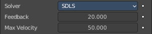
Computes the damping automatically by estimating the level of ‘cancellation’ in the armature kinematics. This method works well with the Copy Pose constraint but has the drawback of damping more than necessary around the singular pose, which means slower movements. Note that this is only noticeable in Simulation mode.
The SDLS solver does not work together with a Distance constraint. You must use the DLS solver if you are going to have a singular pose in your animation with the Distance constraint.
Feedback
Coefficient on end effector position error to set corrective joint velocity. The time constant of the error correction is the inverse of this value. However, this parameter has little effect on the dynamic of the armature since the algorithm evaluates the target velocity in any case. Setting this parameter to 0 means ‘opening the loop’: the solver tracks the velocity but not the position; the error will accumulate rapidly. Setting this value too high means an excessive amount of correction and risk of instability. The value should be in the range 20-100. Default value is 20, which means that tracking errors are corrected in a typical time of 100-200 ms. The feedback coefficient is the reason why the armature continues to move slightly in Simulation mode even if the target has stopped moving: the residual error is progressively suppressed frame after frame.
Max Velocity
Indicative maximum joint velocity in radian per second. This parameter has an important effect on the armature dynamic. Smaller value will cause the armature to move slowly and lag behind if the targets are moving rapidly. You can simulate an inertia by setting this parameter to a low value.
DLS
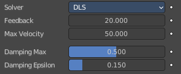
Computes the damping manually. Damping and Epsilon must be tuned for each armature. You should use the smallest values that preserve stability.
Feedback
Coefficient on end effector position error to set corrective joint velocity. The time constant of the error correction is the inverse of this value. However, this parameter has little effect on the dynamic of the armature since the algorithm evaluates the target velocity in any case. Setting this parameter to 0 means ‘opening the loop’: the solver tracks the velocity but not the position; the error will accumulate rapidly. Setting this value too high means an excessive amount of correction and risk of instability. The value should be in the range 20-100. Default value is 20, which means that tracking errors are corrected in a typical time of 100-200 ms. The feedback coefficient is the reason why the armature continues to move slightly in Simulation mode even if the target has stopped moving: the residual error is progressively suppressed frame after frame.
| Entry | What it does |
|---|---|
| Max Velocity | Indicative maximum joint velocity in radian per second. This parameter has an important effect on the armature dynamic. Smaller value will cause the armature to move slowly and lag behind if the targets are moving rapidly. You can simulate an inertia by setting this parameter to a low value. |
| Damping Max | Maximum amount of damping. Smaller values means less damping, hence more velocity and better precision but also more risk of oscillation at singular pose. 0 means no damping at all. |
| Damping Epsilon | Range of the damping zone around singular pose. Smaller values means a smaller zone of control and greater risk of passing over the singular pose, which means oscillation. |
Auto Step
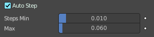
Let the solver set how many substeps should be executed for each frame.
A sub step is a subdivision on the time between two frames for which the solver evaluates the IK equation and updates the joint position. More substeps means more processing but better precision on tracking the targets. The auto step algorithm estimates the optimal number of steps to get the best trade-off between processing and precision. It works by estimation of the non linearity of the pose and by limiting the amplitude of joint variation during a sub step. It can be configured with the min and max parameters.
| Entry | What it does |
|---|---|
| Steps | Auto Step off. Choose a fixed number of substeps with this parameter. Sub step should not be longer than 10 ms, which means the number of steps is 4 for a 25 fps animation. If the armature seems unstable (vibrates) between frames, you can improve the stability by increasing the number of steps. |
| Steps Min | Auto Step on. Proposed minimum sub step duration (in second). The auto step algorithm may reduce the sub step further based on joint velocity. |
| Max | Auto Step on. Maximum sub step duration (in second). The auto step algorithm will not allow sub step longer than this value. |
Selection Sets
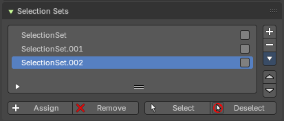
This panel allows the creation, deletion and editing of Selection Sets. Bone collections are for edit and pose mode. Selection sets is for pose modes only.
List View
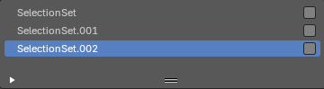
The List view with the selection sets. Double clicking at the name makes it editable.
In the list view, you can drag and drop collection order, drag and drop to create child Bone Collections and show/hide collections by using the eye column. You can also Solo a collection by pressing on the star column.
Note: To add a child Bone Collection, which creates a collapsible hierarchy of bone collections, you will need to drag a Bone Collection into a parent Bone Collection. This allows to toggle parent visibility to inherently toggle children visibility.
Right click menu at a list item
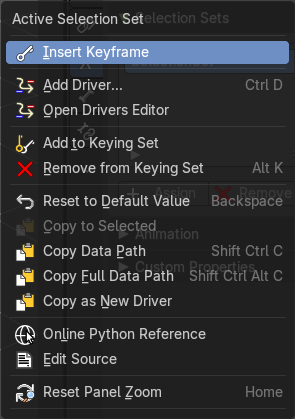
When you right click at one of the menu items then you will reveal a context menu. The content is the usual entries. So we will not explain it here.
Reset Panel Zoom
Resets the panel zoom factor. You can zoom in and out with holding ctrl and moving the left mouse.
Add / Remove
Add or remove a selection set.
Selection Set specials
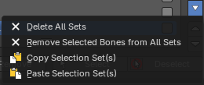
This group of operators show additional options. You can alternatively use the context menu.
| Entry | What it does |
|---|---|
| Delete all Sets | Removes all selection sets. |
| Remove selected Bones from all Sets | Remove the selected Bones from all Selection Sets. |
| Copy Selection Set(s) | Copies the selected Selection sets. |
| Paste Selection Set(s) | Pastes the selected Selection sets. |
Move Selection Set Up / Down
Move the selected bone group up or down in the list.
Assign
Assigns the selected bones to the Selection Set.
Note: A bone can belong to multiple collections.
| Entry | What it does |
|---|---|
| Remove | Removes the selected bones from the Selection Set. |
| Select | Selects the bones in the Selection Set. |
| Deselect | Deselects the selected bones in the Selection Set. |
Custom Properties Panel

Here you can define custom properties that can be used for scripting.
Here you might also find custom properties from addons or scripts.
Add
Adds a new property.
Edit

Opens a panel where you can adjust the settings for the custom property.
Remove
Removes the property.